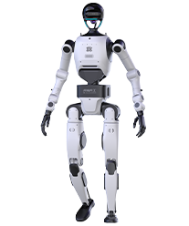

Humanoid · China · Strong signal · #17 R-Score rank
Embodied Tien Kung 3.0 Robot Profile
Industrial, commercial, embodied AI development and high-dynamic autonomous tasks
Robot Snapshot
Core commercial and technical signals for Embodied Tien Kung 3.0.
Embodied Tien Kung 3.0 facts
- Company
- X-Humanoid →
- Status
- Launched / advanced platform
- Use case
- Industrial, commercial, embodied AI development and high-dynamic autonomous tasks
- Height
- Full-size
- Runtime
- Not disclosed
- Official source
- Open official source →
Robologai view
Embodied Tien Kung 3.0 is tracked as a Humanoid robot for Industrial, commercial, embodied AI development and high-dynamic autonomous tasks. Robologai scores it by maturity, deployment signal, price clarity, media proof, and official source strength.
77/100 Strong signal
Maturity 4/5
Price clarity 1/5
Commercial 68
Mobility 93
AI signal 93
Strong signal
Readiness Breakdown
How Robologai scores Embodied Tien Kung 3.0 across market-readiness signals.
Data Quality
Source confidence, pricing clarity, and deployment proof.
Source Notes
Embodied Tien Kung 3.0 source trail.
Deployment Context
What Embodied Tien Kung 3.0 signals about the physical AI market.
Compare Next